ORDOgni様 もし撮影いただけるなら（スマホでOK）
2026-09-28 作成 ／ ORDOgni（オルドーニ）高橋様 ／ 株式会社ランバード AI動画制作
このシートについて
動画の内容はAIでも作れますが、実際のお店で撮った素材があると「本当にこのお店の動画」という仕上がりになります。もし撮影いただけるようでしたら、下の10カットをお願いします。全部でなくても構いません。撮れた分だけ送ってください。
まず全体のお願い（これだけ守っていただければ大丈夫です）
- スマホは横向き（16:9）で撮ってください。縦は使えません
- 動画は1カット10秒以上、カメラは動かさずその場で固定（壁や棚に肘をつけると安定します）。ズームは使わない
- 明かりは「窓の自然光」＋いつもの店内照明。スマホのフラッシュはOFF
- 1カットに写すものは1つ（手元なら手元だけ、ダンベルならダンベルだけ）。人は最大2人まで
- 撮ったものは加工・フィルターなしでそのまま送ってください
- 迷ったら「少し引き」で1本、「寄り」で1本の2本ずつ撮ってください。こちらで選びます
撮っていただきたいカット（13カット）
「高さ」はカメラ（スマホ）を構える位置、「向き」はレンズの向きです。各カットの下に、ランバードが過去に実際に撮影した同業種（ネイルサロン・パーソナルジム）のPR動画の1コマを「撮り方の見本」として載せています。写っているのは別のお店ですので、カメラの位置・高さ・寄り具合だけを真似してください。
ネイルサロン側
N1施術デスク全体（椅子・照明アーム・カラーチャートが入る引き）
- 高さ・向き
- 目の高さ、水平
- 距離
- 部屋の入口〜2mほど離れて、デスクの斜め前から
- 秒数
- 動画10秒 または 写真
昼間の窓が明るい時間に。人は写らなくてOK
こんな撮り方です（ランバードが撮影した同業種のPR動画の1コマ）
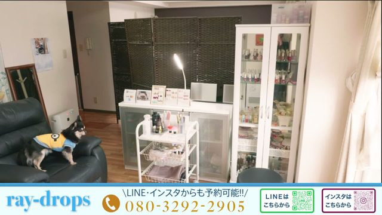
Ray-drops：引き・水平・固定（人なし）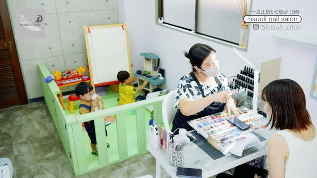
hauoli nail salon：やや俯瞰・広め・固定
N2施術中の手元（筆でジェルを塗っている瞬間）
- 高さ・向き
- お客様の頭の少し上から見下ろす（45度くらい）。ネイリストの肩越し
- 距離
- 手元から40〜50cm。手が画面の下2/3に入る大きさ
- 秒数
- 動画15秒
一番使うカットです。お客様の手は指先だけで大丈夫。動きは「塗る」だけでOK
こんな撮り方です（ランバードが撮影した同業種のPR動画の1コマ）
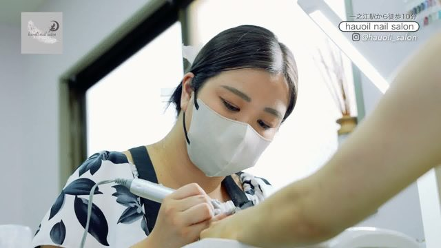
hauoli nail salon：俯瞰45度・寄り（器具が主役）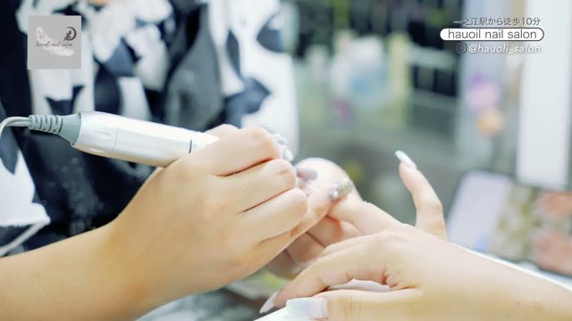
hauoli nail salon：俯瞰やや斜め・寄り
N3同じ施術を横から（水平）
- 高さ・向き
- デスク横に座り、手元と同じ高さで水平
- 距離
- 手元から40〜50cm
- 秒数
- 動画15秒
N2と交互に使います（上から／横から、を切り替えると動画らしくなります）
こんな撮り方です（ランバードが撮影した同業種のPR動画の1コマ）
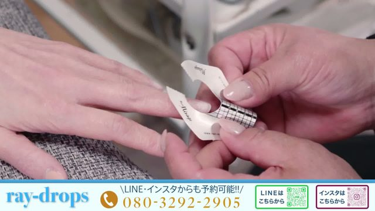
Ray-drops：水平・寄り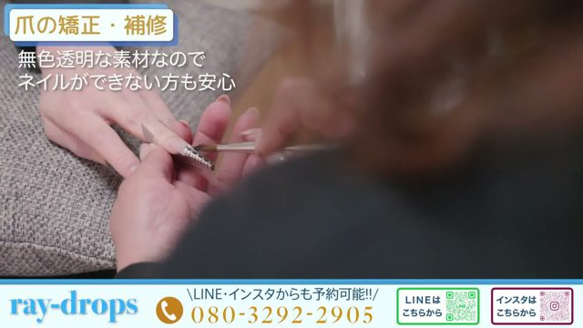
Ray-drops：水平・寄り（横から）
N4仕上がったネイルの手（お客様の片手だけ）
- 高さ・向き
- 真上寄りの俯瞰（お客様の頭側から）
- 距離
- 手が画面いっぱいに入る距離（30cmほど）
- 秒数
- 動画10秒 または 写真
指を軽く曲げて爪が見えるように。白いデスクの上に手を置いて
こんな撮り方です（ランバードが撮影した同業種のPR動画の1コマ）
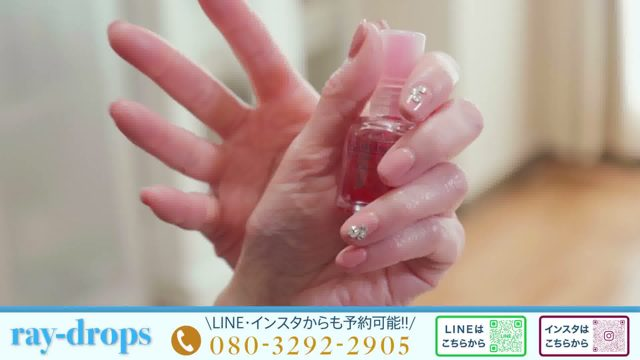
Ray-drops：斜め上・寄り（爪がはっきり）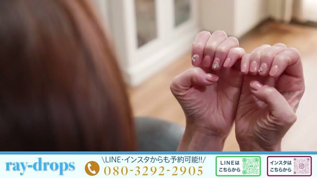
Ray-drops：斜め上・寄り（両手の例）
N5カウンセリング／会話（お客様と高橋様の2人）
- 高さ・向き
- 目の高さ、水平。2人を斜め前から
- 距離
- 2人の上半身が入る距離（1.5mほど）
- 秒数
- 動画15秒
笑っていれば十分です
こんな撮り方です（ランバードが撮影した同業種のPR動画の1コマ）
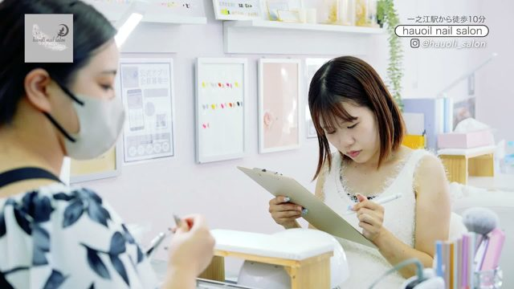
hauoli nail salon：水平・上半身・2人（カルテを見ながら）
パーソナルジム側
G1ジム全体（ダンベル・床・白い壁が入る引き）
- 高さ・向き
- 目の高さ、水平
- 距離
- 入口側から2mほど離れて
- 秒数
- 動画10秒 または 写真
昼間の自然光で
こんな撮り方です（ランバードが撮影した同業種のPR動画の1コマ）
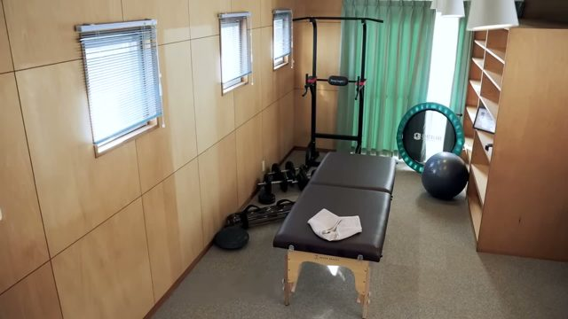
studio eos：引き・固定（人なし）
G2ダンベル（床に置いたまま）
- 高さ・向き
- 床すれすれの低い位置（スマホを床に置くくらい）、水平
- 距離
- ダンベルから50cm
- 秒数
- 動画10秒 または 写真
木目の床が画面の下1/3に入るように
こんな撮り方です（ランバードが撮影した同業種のPR動画の1コマ）
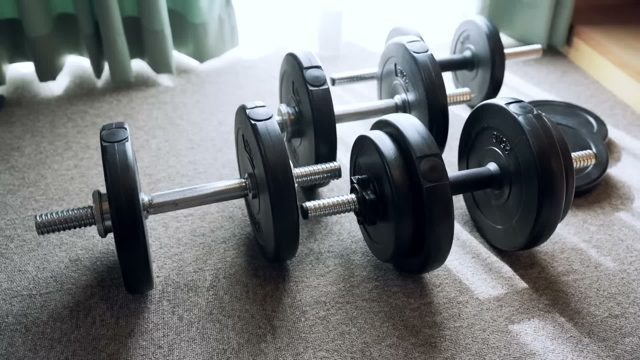
studio eos：低い位置・寄り・固定
G3トレーニング中の2人（トレーナーがお客様のフォームを横から支える）
- 高さ・向き
- 目の高さより少し上（棚の上にスマホを置くイメージ）、ほぼ水平
- 距離
- 2人の全身が入る距離（3mほど）
- 秒数
- 動画15秒
白い壁を背景に
こんな撮り方です（ランバードが撮影した同業種のPR動画の1コマ）
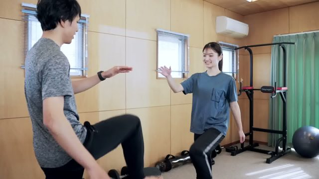
studio eos：水平・全身〜ミドル・2人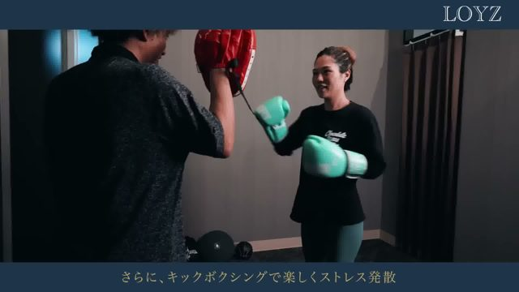
Loyz：水平・全身・2人（Loyz）
G4同じトレーニングを寄りで（手とダンベルだけ）
- 高さ・向き
- 目の高さ、水平
- 距離
- ダンベルを持つ手から50cm
- 秒数
- 動画10秒
顔は入れなくてOK
こんな撮り方です（ランバードが撮影した同業種のPR動画の1コマ）
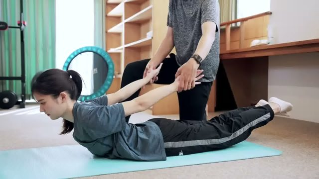
studio eos：寄り・手元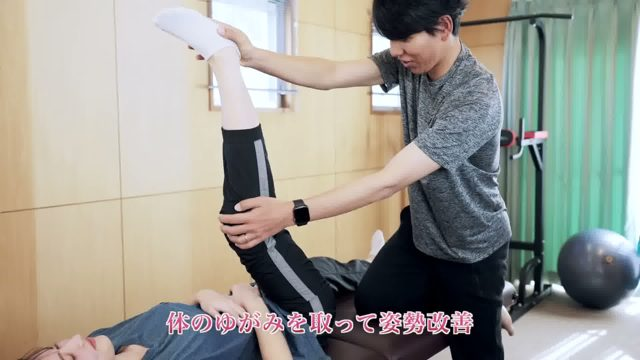
studio eos：寄り・手元（脚を上げる）
G5ジムの相談（旦那さんとお客様が立って話す・2人）
- 高さ・向き
- 目の高さ、水平
- 距離
- 2人の上半身が入る距離（1.5mほど）
- 秒数
- 動画8秒
器具の前で立ち話。旦那さんがお客様の話を聞いている表情が撮れれば十分です
こんな撮り方です（ランバードが撮影した同業種のPR動画の1コマ）
Loyz：水平・全身・2人hauoli nail salon：水平・上半身・2人
お二人・お客様
N6お二人のお迎え（奥さんと旦那さん・2人）
- 高さ・向き
- 目の高さ、水平。カメラ目線の少し横
- 距離
- 胸〜腰から上が入る距離（1.5mほど）
- 秒数
- 動画8〜10秒
動画の締めに使う一番大事なカットです。奥さんに一言声をかけて、自然に笑った前後を残してください。旦那さんは半歩後ろで控えめな笑顔でOK
こんな撮り方です（ランバードが撮影した同業種のPR動画の1コマ）
hauoli nail salon：水平・上半身・2人studio eos：水平・ミドル・2人
P1男女2人でご来店のイメージ（お客様役2人・任意）
- 高さ・向き
- 目の高さ、水平
- 距離
- 2人の腰から上（1.5mほど）
- 秒数
- 動画5〜8秒
ネイルデスクの脇に2人で並んで立つだけでOK。スタッフは入れない。ご協力いただけるお客様やご友人がいれば
こんな撮り方です（ランバードが撮影した同業種のPR動画の1コマ）
Ray-drops：引き・水平（店内）
お店の入口・外観
E1入口の扉と看板（扉が開いて中が見えるところ）
- 高さ・向き
- 目の高さ、水平
- 距離
- 扉の正面から3mほど
- 秒数
- 動画10秒 または 写真
前回いただいた「扉のafter」動画と同じ位置でOK。昼間に
こんな撮り方です（ランバードが撮影した同業種のPR動画の1コマ）
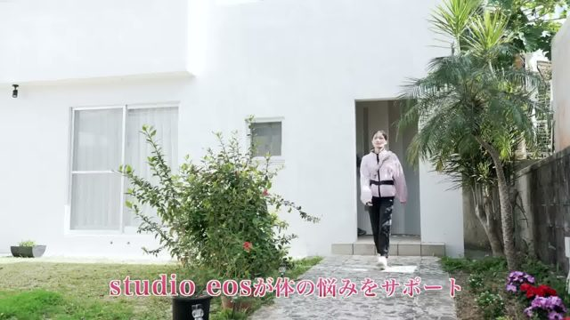
studio eos：水平・引き（玄関）
写真でお願いしたいもの（動画とは別に）
① ジム側の店内写真 3〜5枚
壁・床・器具の並びが分かるように、入口側から1枚、横から1枚、器具に寄って1枚。人は写らなくてOK。いまのモックアップのジム側は、ダンベルの写真だけを元に作っているため背景が「無地の壁」になっています。店内写真があると、本当にこのお店に見える画になります。
② お二人の顔写真 各3枚（正面・斜め・笑顔）
スマホで、窓の近くの明るい場所で。加工なし。いまの動画に出ている「奥さん役」「旦那さん役」はAIの架空の人物です。ご本人が動画に出てよい場合、この写真を元にご本人の顔で作り直せます（顔写真の使用はご本人の同意をいただいた上で、この動画にだけ使います）。
写真でOKなもの・動画が必要なもの
- 写真でOK: N1（デスク全体）、N4（仕上がりの手）、G1（ジム全体）、G2（ダンベル）、E1（入口）
- 動画が必要: N2・N3（施術の手元）、N5（会話）、G3・G4（トレーニング）、G5（相談）、N6（お二人のお迎え）
人の動きがあるカットは、動画からの方が自然に仕上がるためです
避けていただきたいこと
- 逆光で人物が真っ黒になる位置（窓を背にして人を撮らない）
- スマホの「ポートレートモード」「美肌」「フィルター」
- 縦動画、ズーム、カメラを振る
- 3人以上が写るカット
- 商品のラベル・値札・他社ロゴが大きく写るカット
この後の流れ
- ディレクションでこのシートをご説明します
- 撮影データはギガファイル便かLINEでお送りください
- いただいた素材を「そのまま使うカット」と「AIで補うカット」に分けて、次のプレビューに反映します